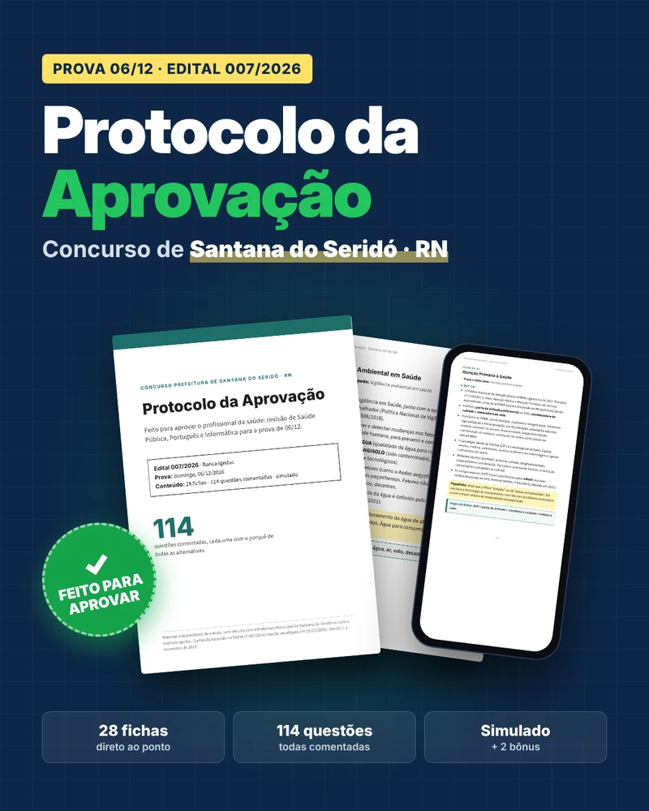
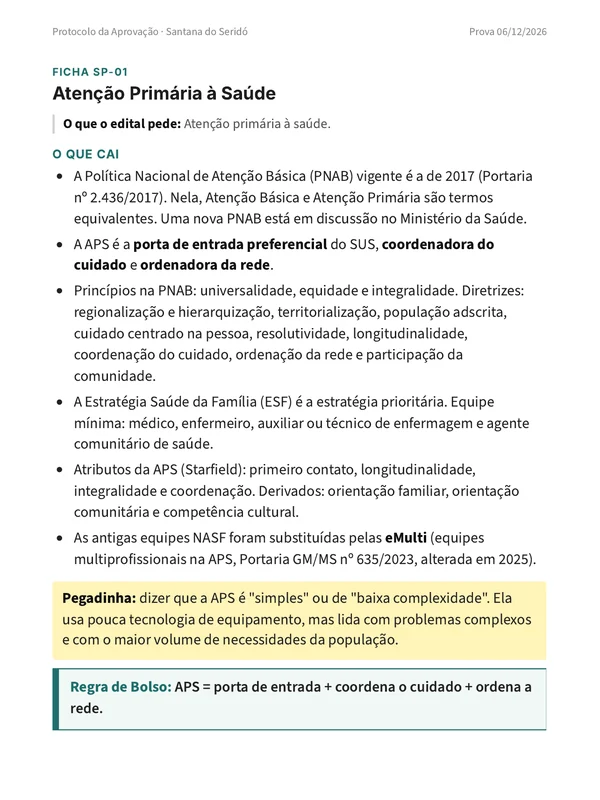
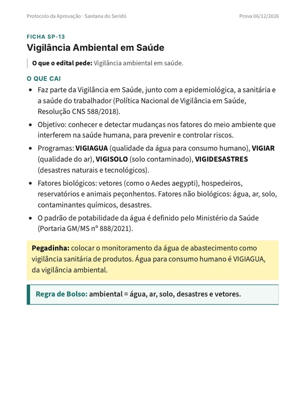
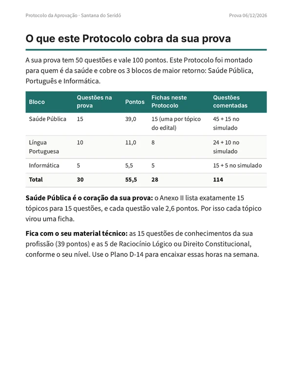
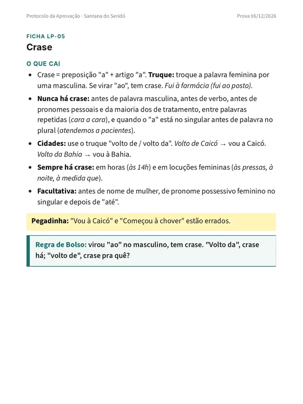
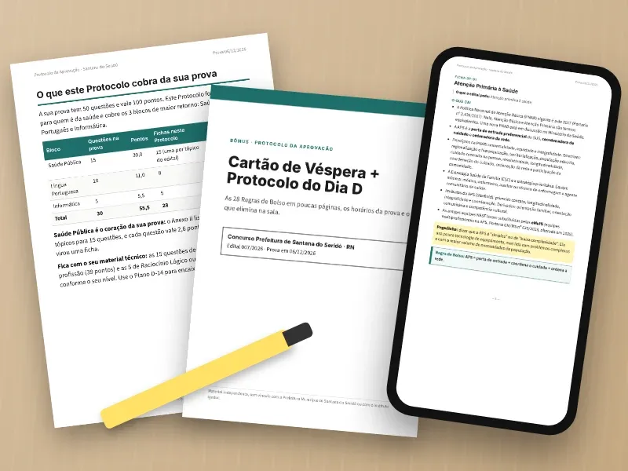

Concurseiro da saúde, esse é o protocolo para tu ser aprovado em Santana do Seridó: a revisão do que decide a tua classificação, Saúde Pública, Português e Informática, ficha por ficha, com as pegadinhas que a banca usa para derrubar candidato.

Concurso não se passa sabendo tudo. Se passa dominando o que mais pesa e enxergando a pegadinha antes da banca. É isso que o Protocolo faz: tira o que não decide e te entrega, ficha por ficha, o que te coloca na lista de aprovados.
Cada parte traz fichas diretas: o que cai, a pegadinha, a Regra de Bolso e questões comentadas no estilo situação-problema que o edital prevê.
As contagens somam 48 questões, todas comentadas.
Páginas reais do material: fichas curtas, para revisar cada tópico em poucos minutos.




Arraste para o lado →
Vem junto no plano completo
Um para organizar os dias que faltam, outro para chegar no domingo, 06/12, sabendo o que revisar e o que fazer na sala.
O que revisar em cada dia até 06/12, em 3 velocidades: 1 dia, 3 dias ou 7 dias.
De R$ 9,90GRÁTIS
Todas as Regras de Bolso em uma página, horário dos portões e o que elimina na sala.
De R$ 9,90GRÁTIS

Por que esse material funciona
O Protocolo nasceu do Edital 007/2026. A gente pegou o Anexo II com olhar de quem é da saúde e separou os blocos que mais pesam na tua classificação: Saúde Pública, Português e Informática, 55,5 pontos da prova. Cada tópico virou uma ficha curta, com o que cai, a pegadinha, uma Regra de Bolso e uma questão comentada. Estuda por ele e tu chega no dia 06/12 com o núcleo da tua aprovação dominado.
Tu não precisa saber tudo para passar. Precisa dominar o que decide a aprovação, e está tudo aqui.
Pagamento único, sem mensalidade e sem fidelidade.
O bloco que mais pesa, para começar a revisar hoje.
R$ 9,90 à vista
Por só R$ 10 a mais, tu leva o Protocolo completo: Saúde Pública, Português, Informática, simulado comentado e os 2 bônus de reta final.
R$ 19,90 à vista
Garantia de 7 dias: não curtiu, devolvemos 100% do valor.
Não. Todas são inéditas, escritas em cima do Edital 007/2026, no estilo situação-problema que o edital prevê. Cada uma tem o comentário de todas as alternativas.
Não. É revisão de reta final em PDF: fichas diretas e questões comentadas, para ler no celular.
Os arquivos chegam no teu e-mail assim que o pagamento é confirmado. Dá para começar a revisar no mesmo minuto.
Serve se tu és da saúde e vai fazer a prova de Santana do Seridó em 06/12. O Protocolo cobre Saúde Pública, Português e Informática da tua prova; os conhecimentos técnicos da tua profissão não estão incluídos.
Por menos de R$ 20, tu leva o protocolo feito para aprovar quem é da saúde em Santana do Seridó.
Garantir por R$ 19,90